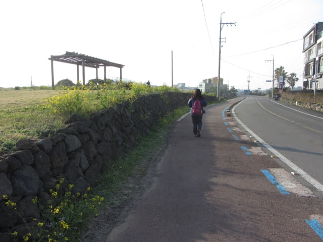
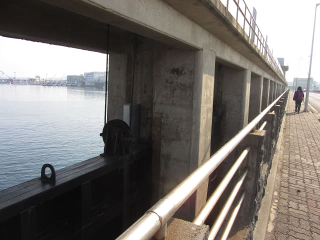
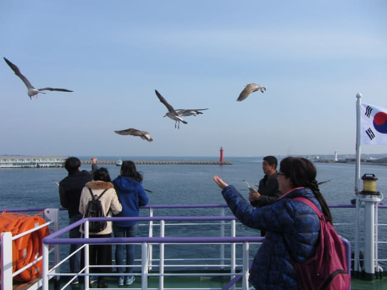

吃完早餐, 返回房間收拾一些隨身攜帶的用品及旅遊資料, 於上午八時十分開始今天的行程。按計劃, 我們是從城山美麗度假村步行往城山碼頭, 準備搭乘早上九時的渡輪往牛島。看看地圖, 城山碼頭離酒店其實並不太遠, 按照酒店至我們下車「오조해녀의집」巴士站的距離來推算, 估計步行約四十分鐘便可抵達。
但我們忘記了還要找路往碼頭, 那裡是售票大樓? 原來還要填寫表格, 購票和找登船碼頭等等的額外時間, 最後買完船票後, 握住護照、船票和找錢, 慌忙的跑往碼頭, 幾乎錯過了早上九時的航班。

步出城山美麗度假村, 沿城山邑日出海岸一直走。晨早的日出海岸, 又是另一番景色。

經過昨晚在這裡吃黑毛豬的餐館。
在黑毛豬餐館向左轉便是我們從表善乘巴士來城山時下車的「오조해녀의집」巴士站。
城山浦港 (성산포항)．圩舠橋 (갑문교)
接著走上橫躺城山浦港的圩舠橋。
城山浦港景色。
城山浦港北防波堤西端燈塔、城山浦港西防波堤燈塔
保護著城山浦港港的北防波堤及西防波堤, 防波堤上的兩個燈塔分別是城山浦港北防波堤西端燈塔 (성산포항북방파제서단등대)和城山浦港西防波堤燈塔 (성산포항서방파제등대)
沿圩舠橋一直走。橋旁是攔沙用的堰壩。

很快便來到圩舠橋的另一邊。看看手錶, 差不多早上八時四十分, 離開船只有二十分鐘。想起前面的一段路是陌生的, 這時開始有些心急了!
在橋頭轉左沿馬路一直走。


前面的馬路是向右彎, 內圈的距離比較短, 便沿斑馬線走過馬路, 繼續向前走。
終於看見往客運馬頭的交通路標, 知道沒有走錯路。接著循客運馬頭路標走。
向右拐個彎, 前面是一個面積很大的停車場, 心想這裡應該是碼頭了。看見左邊有一座玻璃建築物, 估計那裡便是售票處吧, 便匆匆走去, 原來不是。
原來隔鄰的白色建築物才是售票處! 因向來不喜歡做太多所謂「旅遊功課」, 才出現這問題, 也怪自己低估了酒店至這裡的距離。

售票至登船的一段混亂時間
接著由售票至登船是一段非常混亂的時間, 記憶也十分模糊和混亂, 什麼照片也沒有, 正確說是根本沒有手和時間去拍照。
匆匆走進白色建築物, 看見好像是什麼「牛島 Ticket」的標示, 心神稍為定下來, 還有幾分鐘時間, 應該可以趕及搭乘早上九時的航班。連忙走到其中一個窗口, 好像不賣票的, 走到另一個窗口, 情況也一樣, 溝通了一會, 才知道要填寫表格, 匆匆走到大堂中間的服務櫃台, 取了一張表格, 幸好表格有英文的, 很潦草的填寫了我們的資料, 便立即轉身往售票窗口, 原來還要檢查護照的, 最後終於買了兩張往牛島的船票。
買完船票, 望望手錶, 離上船還有少許時間。 Oh! My God! 現在才想起碼頭在那裡? 還要跑往碼頭! 馬上問售票員碼頭在那裡? 她指著我們剛才進入來的大門。
時間實在太緊迫, 還沒有整理好手上的東西, 便握住護照、船票和找錢, 衝出大門。來到大門外, 望望左右, 那裡才是往牛島的碼頭? 將手上的船票遞給一位途人看, 他又指示我們返回售票大樓內, 碼頭莫非是在售票大樓的另一邊出口? 便立即又跑回售票大樓內?
接著的片段實在太混亂, 胡里胡塗的, 記得又問售票員牛島碼頭在那裡, 答案都是一樣, 都是指著大門。唉! 唯有又跑出售票大樓, 沒時間了, 便隨便選擇轉右跑往其中一個碼頭, 只可以說很幸運的竟然是往牛島的碼頭! 最後在開船前的一刻跳上了渡輪。
冷風吹來, 理智漸漸回復清醒時, 我們已經站在渡輪甲板上, 這時才想起拍照。
